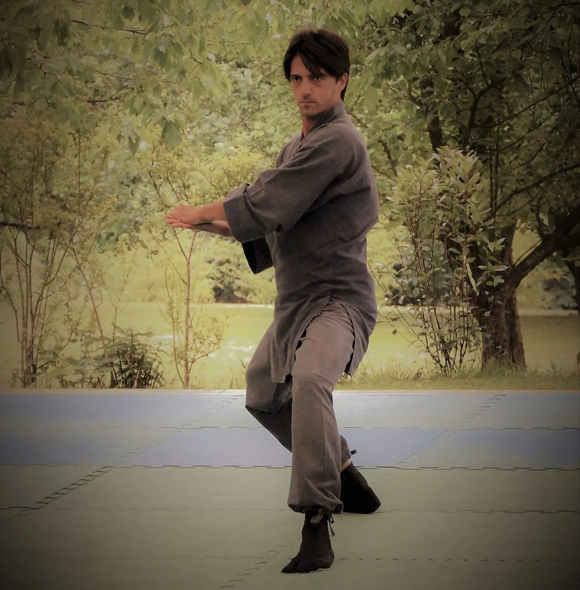

Un luogo di pratica della Via di conoscenza di Sé.
Il Kami No Kan
Il Kami No Kan è un autentico Dojo, un luogo di pratica della Via di conoscenza di Sé attraverso Arti e discipline Orientali volte ad uno sviluppo armonico dell'Uomo.
Una scuola erede della storica tradizione marziale del nostro territorio, in cui si tramandano i più alti e nobili valori marziali: lealtà e giustizia, disciplina e rispetto, determinazione e coraggio.
Armonia e bellezza contraddistinguono il nostro Dojo, un luogo fuori dall'ordinario, in cui si ricerca l'essenza più vera e profonda delle Arti Marziali, non sempre rispettata dalla straordinaria diffusione di queste discipline in Occidente.
Una scuola in cui l'Arte è vissuta come mezzo di massima espressione di Sé, di ricerca di bellezza e perfezione, di consapevolezza dell'unità con se stessi e gli altri.
神M° Massimiliano MercedeFondatore e Direttore Tecnico
Gli spazi
Armonia e bellezza
Il tatami e le capriate in legno, la soglia intagliata, il giardino di pietra, bambù e lanterne.

Direttore tecnico
M° MassimilianoMercede
Fondatore e Direttore Tecnico del Kami No Kan Dojo.
Nel 2010, insieme a Giustino Caiazzo, ha dato vita ai Kodama Shinkyo, il primo gruppo di Taiko nel Sud Italia.
Staff
Chi insegna al Dojo
AG
Istruttrice Karate e Pilates Matwork
Angelina Grassi
Nata a Nocera Inferiore nel 1981, conduce gli studi in ambito classico ed umanistico fino al conseguimento della Laurea Magistrale in discipline giuridiche. Sensibile sin da bambina all'Arte, allo sport ed alla musica, studia canto e danza e pratica diverse attività sportive.
Incontra le Arti marziali nel novembre del 2003 con il M° Mercede, conseguendo nel luglio 2013 il grado di cintura nera 1° Dan e nel 2015, con la Fesik, la qualifica federale di Allenatore di Karate Do Shotokan. Sulla strada delle Arti marziali incontra il Taiko Do, diventando presto membro del KyoShinDo.
Per approfondire lo studio del corretto uso del corpo si avvicina alla ginnastica posturale e al Pilates, conseguendo il titolo di Istruttore Pilates Matwork con l'ACSI.
Responsabile Taiko
Giustino Caiazzo
Laureato in Scienze Politiche. La sua formazione artistica nel Taiko è iniziata nel 2004 e tuttora continua sotto la guida di rinomati sensei giapponesi ed europei: Kurumaya Masaaki, Joji Hirota, Liz Walters (Tamashii Daiko), Gushiken Tsukasa (Ryujin Densetsu), Koji Nakamura (Shumei Daiko), Marco Lienhard (Taikoza), Kumiko Suzuki.
Membro del primo gruppo italiano di percussioni Taiko, il Kyo Shin Do, con il quale si è esibito in numerosi concerti in Italia ed all'estero. Nel 2010, insieme al M° Massimiliano Mercede, ha collaborato alla nascita del primo gruppo di Taiko nel Sud Italia: i Kodama Shinkyo.
SN
Insegnante Yoga
Sandra Nasti
Ingegnere chimico con un amore innato per l'Oriente, che la conduce da giovanissima verso lo studio delle Arti marziali giapponesi. Incontra presto il mondo dello Yoga e la pratica diventa la sua Via.
Studia presso la Federazione Italiana Yoga (FIY), affiliata alla UEY (Unione Europea di Yoga), conseguendo nel 2013 il Diploma quadriennale per insegnante di Yoga. Partecipa a numerosi stage di approfondimento in Italia e all'estero e nel 2015 incontra i maestri Marcello Muro e Lino Miele, grazie ai quali si avvicina alla pratica dell'Ashtanga Yoga.